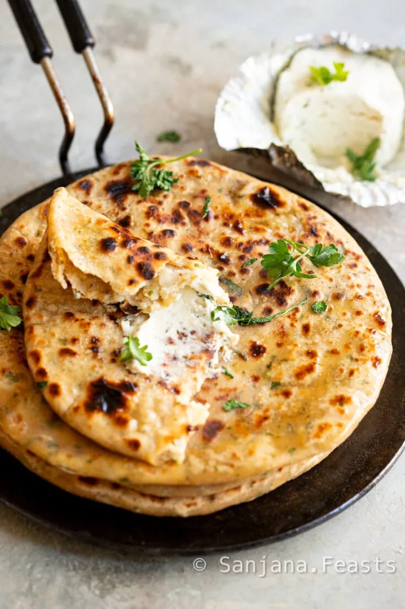
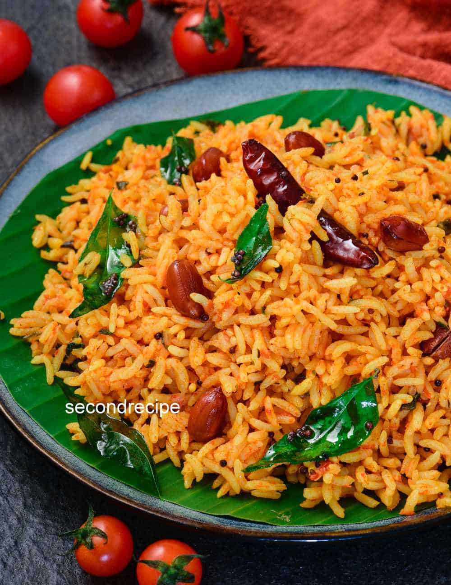
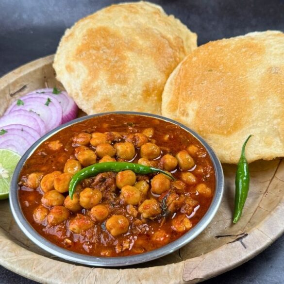
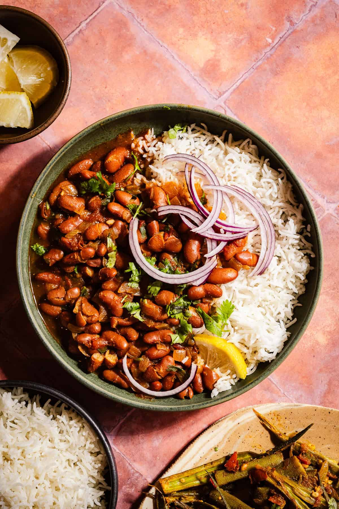
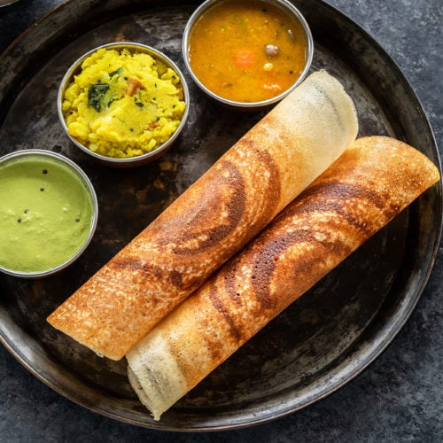

Five Indian Eazy Recipes
Allo Paratha
Tamato Rice
Chhole Bhature
Rajma Chawal
Masala Dosa
Aloo Paratha

Allo Paratha is Popular Indian dish made from whole wheat flour and stuffed with spiced patoto filling
. its is especiallly common in north India and often eaten for breakfast or lunch
Aloo Paratha - 10 Step Method
- Take 2 cups wheat flour in bowl
- Add a pinch od salt and mix
- Add Water gradually and Knead into soft dough
- Cover the Dough and let it rest for 15-20 minitus
- Boil 3-4 potatoes,peel and mash them.
- Add salt,chilli powder,cumin, and coriender leaves to patatoes
- Mix the filling well
- Make small dough balls and flatten one
- Add patato filling inside,seal,and roll into round shape
- Cook an hot tawa with ghee/butter until golden brown on both sides
Back to Top
Tamato Rice

Tamato Rice is simple and flavorful Indian dish made by cooking rice with fresh
tamatoes, spices, and herbs its is popular for it tangy taste and quick prepretion the dish
is usually prepared by sauteing onions green chilies and termeic powder in oil chopped rice is mixed
with this tamato mixture and gently stirred so that all the flavours blend well sometimes peanutes or curry
Tamato rice - 10 step Method
- Wash one cup rice cook it; keep a side
- Heat 2 tablespoons oil in a pen
- Add mustard oil in a pen
- Add cumin seeds and curry leaves
- Add chopped onions and saute until soft
- Add green chilies and cook for a minute
- Add Salt, turmeric,and red chili Powder;mix well
- Add cooked rice and mix gently so it doesn`t break
- cook for 2-3 minitus , garnish with Coriander,and serve hot
Back to Top
Chhole Bhature

Chhole Bhature is a famous north indian dish made of spicy chickpea curry (chhole) served with deep-fried bread
(bhature) it is known for its rich tangy and slightly spicy flavor the chole is preapared by cooking
chickpeas with onions tomatoes and a blend of aromatic spices such as cumin coriander,
garam masala, and chili powder bhature is made from refined flour dough which is rolled into round
shapes and deep fried until it becomes fluffy and golden.
Chhole Bhature 10 step method
- Soak 1 cup chickness(chhole) overnight in water
- Pressure cook the soaked chickpeas with salt until soft
- Heat oil in a pen and add cumin seeds
- Add chopped onions and saute until golden brown
- Add ginger-garlic paste and cook for a minute
- Add chopped tamatoes, turmeric, chili powder,and garam masala;cook until oil seperates
- Add boiled chickpeas and some water cook for 10-15 minitus
- Prepare dough using refined flour(maida),salt,and water; let it rest.
- Roll small balls into circles and deep fry in hot oil to make bhature
- Serve hot chole with bhature, onion slices and pickle.
Back to Top
Rajma Chawal

Rajma Chawal is a popular and comforting North Indian dish loved by people of all ages it
consists of cooked red kidney beans preapered in a thick, flavorful gravy made with tomatoes
onions,and a blend of aromatic spices. this rich curry is served with steamed rice creating
a wholesome and satisfying meal Rajma Chawal is not only delicius but also nutritious, as rajma is a
good source of protien and fiber.
Rajma Chawal 10 step method
- Wash 1 cup of rajma and soak it in water overnight
- Drain the water and rinse the Soaked rajma
- Pressure cook rajma with Fresh water and a little salt for 4-5 whistles until soft
- Heat oil in pen and add cumin seeds; let them crackle
- Add finely chopped onions and saute until golden brown.
- Add ginger-garlic paste and cook for minute.
- Add chopped tomatoes and cook until soft and oil separates.
- Add spices: turmeric,red chili powder,coriender powder, and salt:mix well.
- Add the cooked rajma chawal along with some cooking water and simmer for 10-15 minutes.
- Garnish with Coriender leaves and serve hot with steamed rice.
Back to Top
Masala Dosa

Masala dosa is a popular South Indian dish Known for its crispy texture and flavorful filling.
it is made from a fermented batter of riceand urad dal, which is spread thin on a hot pan and
cooked until golden and crisp the dosa is then filled with a spicy patato mixture preapared
with boiled potatoes, onions,mustured seeds, curry leaves and with coconut chutney and sambar
,making it a complete and satisfying meal.
Masala Dosa 10 Step Method
- Wash 2 cup rice and 1 cup urad dal; soak them seaperatly for 6-8 hours.
- Grind both into a smooth batter,mix well, and leave it to ferment overnight.
- Add salt to the fermented batter and mix gently.
- Boil patotoes,peel them,and mash roughly for the filling.
- Heat oil in a pen;add mustered seeds, curry leaves, and chopped onions.
- Saute onions,then add turmeric,salt,and mashed potatoes;mix well and cook for few minutes
- Heat a flat pan(tawa) and lightly greese it.
- Pour a ladle of batter and spread it thin in circular shape.
- Cook until crispy,place the potato filling in the center, and fold the dosa.
- Serve hot with coconut chutney and sambar
Back to Top